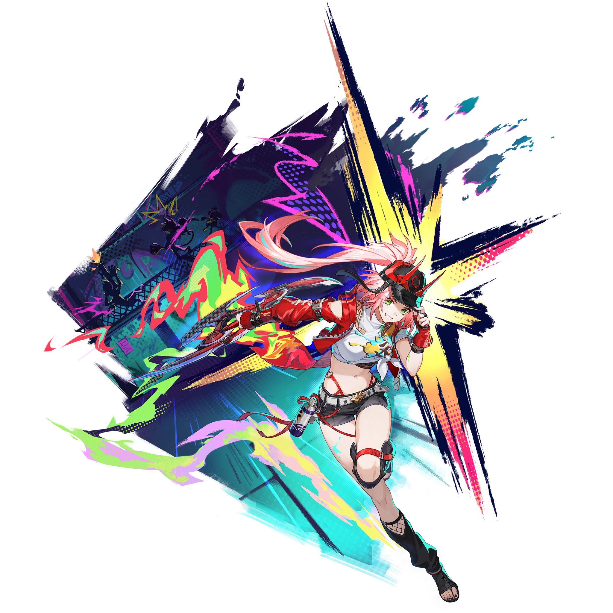

Descripcion del personaje
Rappa es un personaje de 5 estrellas en Honkai: Star Rail, conocida como la "Ninja Deslumbrante." Es una joven peculiar que se presenta como ninja y aparece en Penacony en el momento más oscuro de la noche, con habilidades de combate y técnicas inspiradas en el ninjutsu. Su estilo de vida gira en torno a una mezcla de mantras, sellos ninja y técnicas que combinan elementos visuales como grafiti, rap y cómics.
Su aspecto lúdico y su trasfondo como guerrera ninja la convierten en un personaje atractivo para aquellos que disfrutan de estilos de combate con amplias habilidades de control de multitudes
Introduccion al personaje
En términos de combate, Rappa sigue la senda de la Erudición y tiene el atributo Imaginario, lo que le permite realizar ataques que afectan a múltiples enemigos, ideal para situaciones en las que se necesita controlar a varios oponentes a la vez. En la historia, se dedica a perseguir a su archienemigo, Osaru, un villano que representa una amenaza en el cosmos, en su misión de justicia y protección.

Calidad del personaje

VIA del personaje
Erudicion

Estadisticas del personaje
- PV: 1047
- ATQ: 756
- DEF: 436
- VEL: 96
- Provocacion: 75